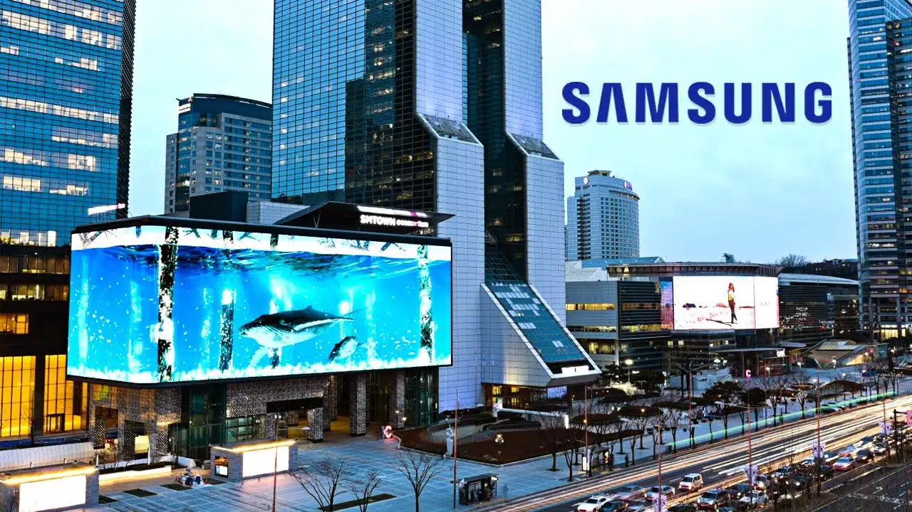

SAMSUNG logo
1993 was a pivotal year for Samsung’s logo design.
This was the year that the logo we know, and love today was first introduced.
This iteration includes updated typography placed within a blue ellipse.
Looking at the wordmark, the “A” does not include the horizontal bar,
which has helped make this logo unique (and has made the logo iconic as a result)
The final logo update for this version is the change in the three stars’ appearance.
1938: Samsung is founded
The Samsung we know today is not the Samsung that existed when the company was founded.
On March 1, 1938, a grocery trading store called, Samsung, was founded by Lee Byung-Chull in Taegu, Korea.
This store was focused on trading noodles and other grocery goods that were produced locally,
and then Samsung would export these goods to China.
